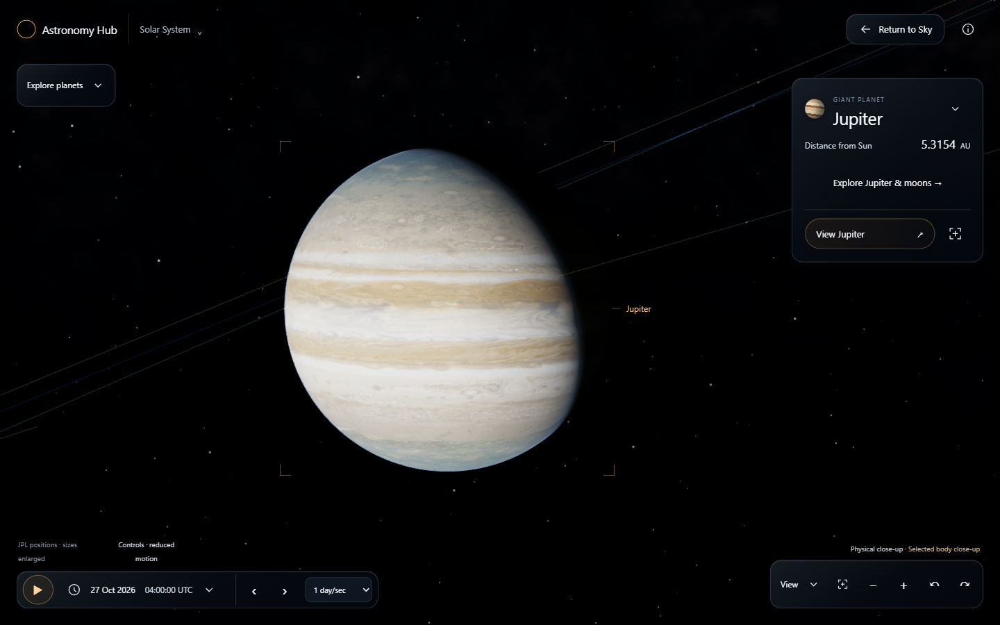
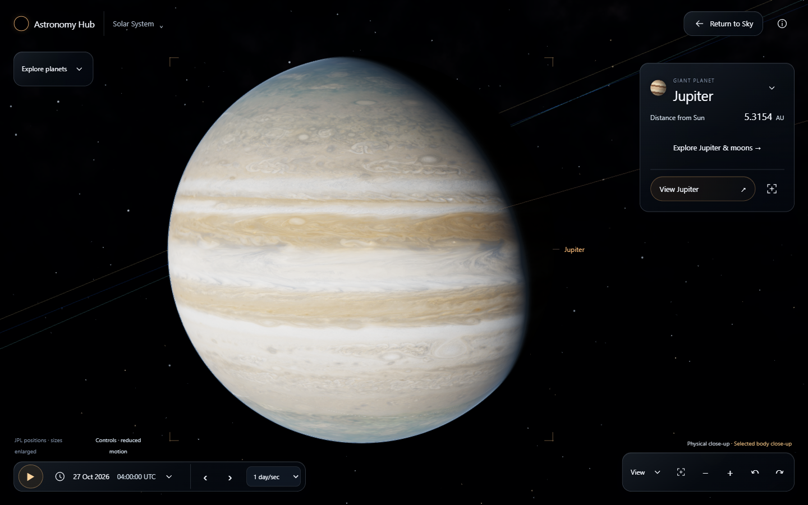
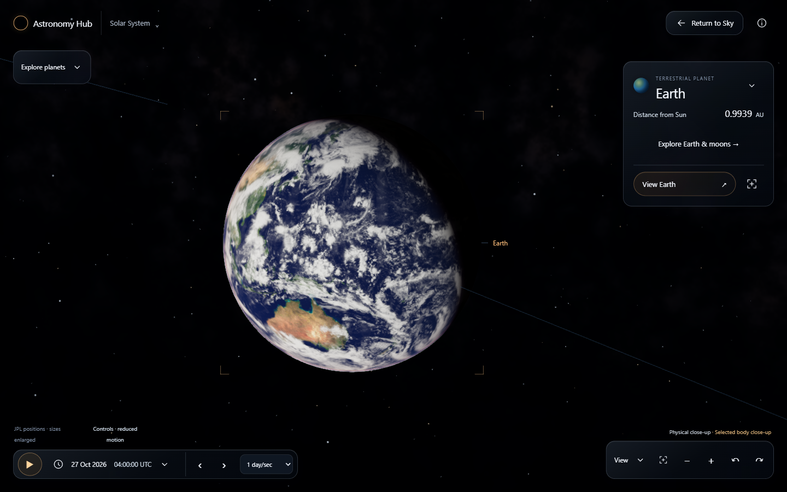
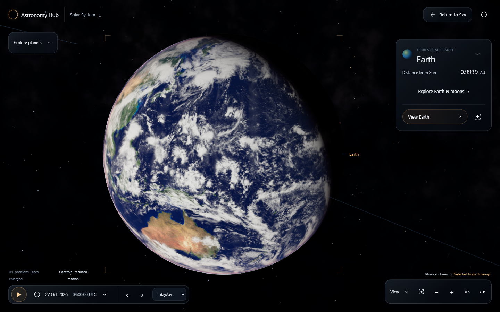
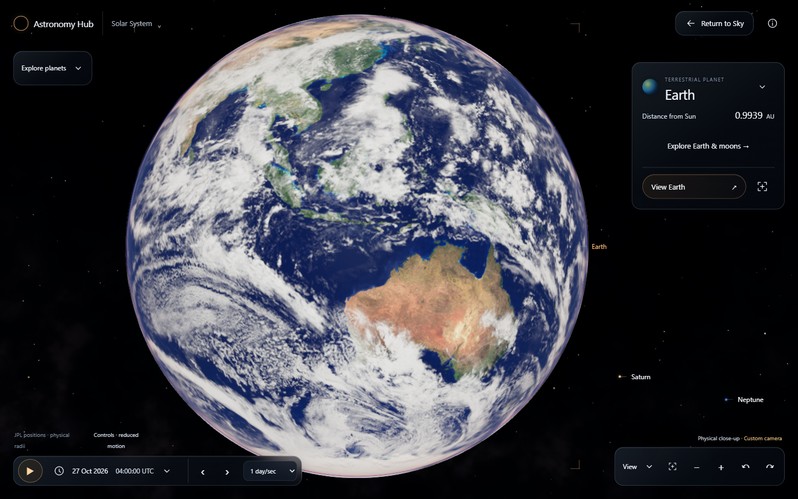
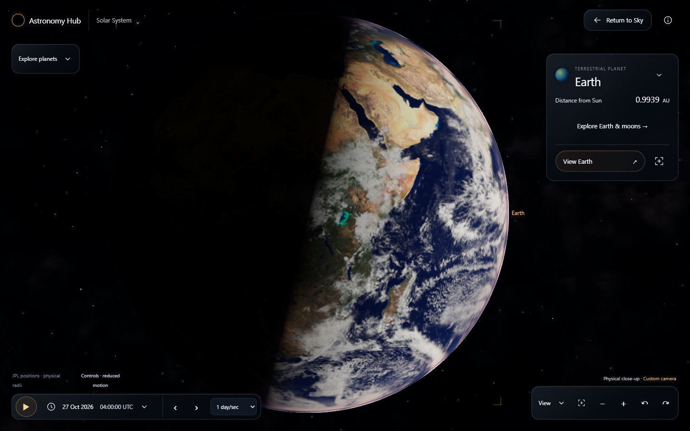
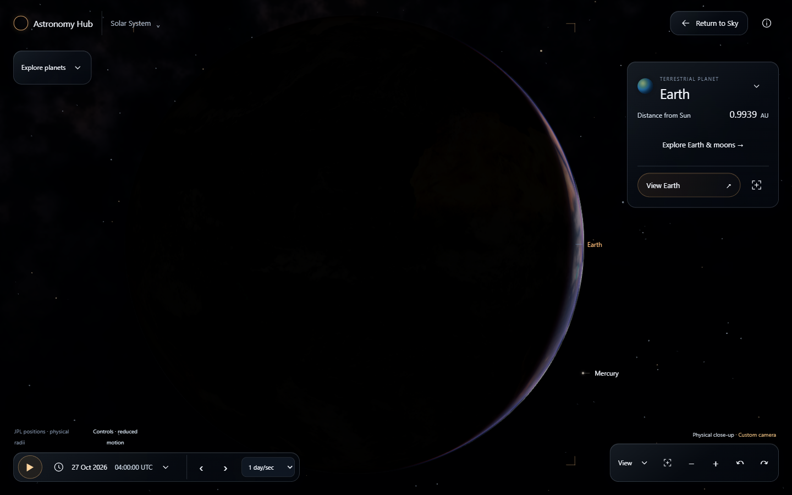
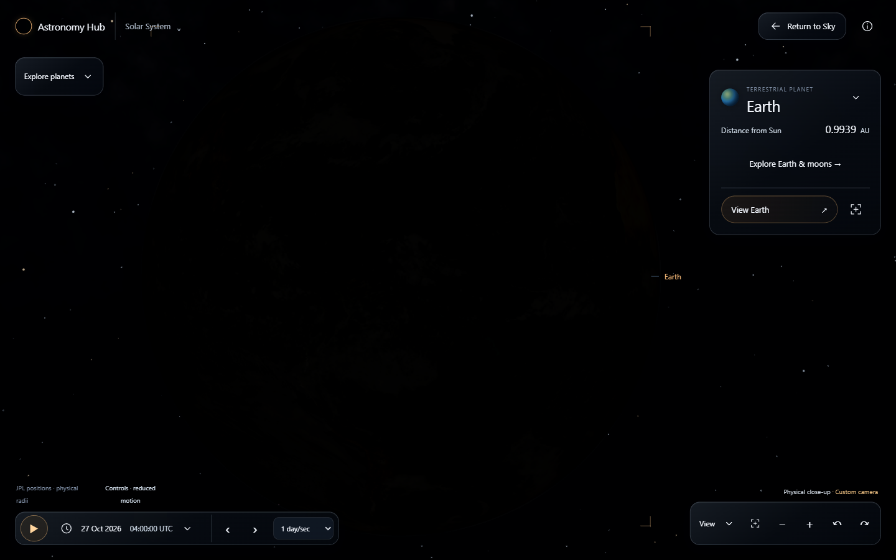
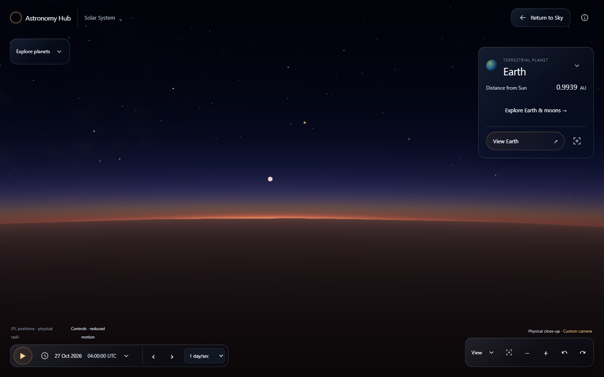

Solar System 2.2 · owner review
Actual Windows Edge / NVIDIA RTX 3060 captures at 2026-10-27 04:00 UTC. Application source: 39f73b2ff0162d491fcf65b41a0bc038dd608b65. Owner visual acceptance remains pending. Portrait/landscape use this desktop GPU; physical iPhone is unverified.
Body comparison pairs use the same camera, target, up vector and epoch (float64 tolerance 1e-12 AU); new overview and arrival compositions are identified separately. Cinematic overview sizes are independently enlarged. Positions, time and selected-body physical radii retain JPL truth. No generated imagery is presented as application evidence.
Source limitations remain visible: Saturn's atlas is intrinsically soft; historical Mars imagery contains mosaic/polar artifacts; Earth clouds are a static 2002 composite. Sun morphology and non-Earth rotation remain illustrative. The portrait overview still packs the inner planets tightly. This candidate does not claim exact reproduction of the concept or release acceptance.
Original approved composition targets
 Original primary concept — design target, not application output
Original primary concept — design target, not application output Original adaptive concept — design target, not application output
Original adaptive concept — design target, not application outputOverview: prior implementation and current composition
Jupiter: matched camera and selected close approach

2.1.1 · previous default camera2.2 · matched prior camera/UTC, Balanced
2.2 · current close approach, physical radiusSaturn: matched camera and selected close approach
Earth: matched camera and selected close approach

2.1.1 · previous default camera2.2 · matched prior camera/UTC, Balanced
2.2 · current close approach, physical radiusMars: matched camera and selected close approach
Sun and Saturn ring views
Earth atmosphere and registered source detail
Detailed · registered 8192×4096 historical Blue Marble
Actual Takram · day · fixed source epoch
Actual Takram · limb · fixed source epoch
Actual Takram · crescent · fixed source epoch
Actual Takram · backlit · fixed source epoch
Actual Takram · near-horizon · fixed source epoch Close approaches · 390x844 desktop-GPU viewport
Close approaches · 844x390 desktop-GPU viewport
Actual fly-to, exploration and return recordings
Real browser actions and camera travel, including interruption/recenter and reduced-motion checks. These are recordings, not rendered illustrations or scripted replacement scenes.
Desktop · Windows GPUPortrait · Windows GPULandscape · Windows GPU